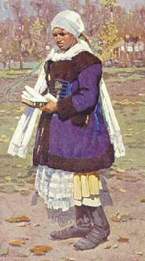
Uprka: Žena z Myjavy
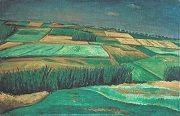
Rabas: Krajina v červenci
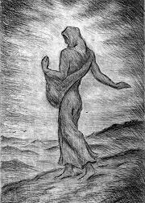
Rabas: Rozsévačka
|
KATOLIČTÍ SPISOVATELÉ
Katoličtí spisovatelé netvořili uzavřenou skupinu se společnou estetikou jako příslušníci levicové avantgardy. Spojovala je víra v Boha a úcta k tradičním křesťanským hodnotám. Nejzajímavějším a nejkontroverznějším autorem byl Jakub Deml. Výrazné prozaické dílo vytvořil Jaroslav Durych nebo Jan Čep. Z básníků potom Josef Palivec, Jan Zahradníček nebo Bohuslav Reynek, který spolupracoval s katolickým nakladatelem Josefem Florianem. Ten vydával bibliofilské tisky v edici Dobré dílo. Katoličtí autoři měli i vlastní časopisy – Archa (1912-1948), Rozruch (1923-1927), Akord (1928-1948) nebo Řád (1933-1944). Časopis Meditace spolupracoval s duchovně orientovanými výtvarníky ze skupiny Sursum (Zrzavý, Váchal...).
Venkovská próza našla v meziválečné době pokračovatele, kteří se hlásili k ruralismu (ruralis = venkovský). Vyznávali tradiční křesťanské hodnoty, vydávali časopis Sever a východ (1925-1930) a publikovali v politických periodikách agrární strany. Nejznámějšími ruralisty byli Josef Knap a František Křelina. Ruralisté si oblíbili tvorbu norského prozaika Knuta Hamsuna, nositele Nobelovy ceny za literaturu, a dalších severských nebo ruských spisovatelů. Náměty z venkovského prostředí malovali výtvarníci Joža Uprka nebo Václav Rabas.
Katoličtí spisovatelé zastávali spíše pravicové politické postoje. Někteří z nich dospěli k militantnímu nacionalismu, antisemitismu a fašismu. Po válce museli své postoje vysvětlovat. Od roku 1948 byli katoličtí autoři pronásledování komunistickou mocí jako političtí nepřátelé. Nesměli publikovat a někteří z nich emigrovali. Roku 1951 proběhl vykonstruovaný proces s katolickými intelektuály, ve kterém byli odsouzeni Křelina, Knap, Zahradníček, Kalista, Palivec nebo Renč k mnoha letům vězení. V 60. letech byli propuštěni a později rehabilitováni.
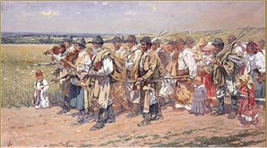
Uprka: Do Rakús
|
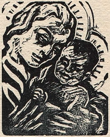
Rabas: Madona
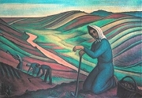
Rabas: Krušovická kopanina
Čteš náboženské knihy? Jaké a proč?
Žije v tvém okolí věřící katolík? Jaký je to člověk?
Proč ruralisté pojmenovali svůj časopis Sever a východ?
Vyhledáváš knihy z prostředí venkova? Proč?
Máš radši vesnici nebo město? Kde se žije lidem lépe? Proč si to myslíš?
Jak vysoký trest dostali jednotliví katoličtí spisovatelé Křelina, Knap, Zahradníček, Kalista, Palivec a Renč? Za co?
Jaký je rozdíl mezi křesťanem, katolíkem a klerikálem?
Jaký je rozdíl mezi nevěřícím, bezvěrcem a ateistou?
Jaký je rozdíl mezi jinověrcem, evangelíkem a protestantem?
|
Jakub Deml (1878-1961)
Deml se narodil v Tasově a zemřel v Třebíči. Nastoupil dráhu katolického kněze, ale pro časté konflikty s nadřízenými byl často překládán, posléze poslán na neplacenou dovolenou a roku 1912 předčasně penzionován. Původně se hlásil ke katolické moderně, brzy se ale vydal osobitou cestou. Demlovo přátelství s Březinou, Šaldou i Florianem skončilo rozchodem. Spolupracoval s výtvarníky Bílkem a Váchalem. Žil se spisovatelkou Pavlou Kytlicovou. V kontroverzní knize Mé svědectví o Otokaru Březinovi obviňuje slavného básníka z antisemitismu, ale k tomu měl nejblíže sám Deml. Veřejně vystupoval proti demokracii. Byl dokonce stíhán pro urážku prezidenta Masaryka. Po válce se ocitl před lidovým soudem, ale ten ho osvobodil. Deml napsal na 140 knih, například expresionisticky laděné básnické prózy Hrad smrti a Tanec smrti, křesťanskou láskou prosvícené knihy Miriam a Moji přátelé nebo kontroverzní Zapomenuté světlo. Vydal 26 svazků časopisu Šlépěje (1917-1941), který plnil výhradně vlastními texty.
|
Jakub Deml: Moji přátelé
Kniha básní v próze Moji přátelé vyniká lyričností a niterným vztahem k přírodě. Deml v ní oslovuje květiny a další rostliny, aby se vyznal z lásky k nim a hlavně k Bohu. Jde o křesťanskou lásku ke všemu živému, jak ji nalézáme už u svatého Františka z Assisi, který kázal ptáčkům. Neotřelá obraznost knihy velmi zaujala Vítězslava Nezvala.
Jakub Deml: Zapomenuté světlo
Zapomenuté světlo je sledem několika dopisů. První z nich je adresován jistému panu B.M.P. Kniha obsahuje Demlovy názory na aktuální problémy a výpady proti různým osobám, ze kterých čiší autorova nesnášenlivost a konfliktní povaha. Kniha byla z mravnostních důvodů cenzurována.
|
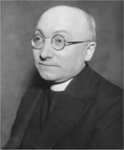
Poznal/a bys jednotlivé květiny, kdybys neznal/a název básně?
Co je apostrofa?
Zjisti, jak vznikly názvy vybraných rostlin.
Vyber si nějakou věc oslov ji podobně jako Deml.
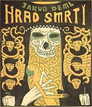
Váchal: Hrad smrti
Cenzurované pasáže Zapomenutého světla jsou označeny podtržením. Proč se podle tebe neměly dostat ke čtenářům?
|
Jaroslav Durych (1886-1962)
Durych se narodil v Hradci Králové, zemřel v Praze. V šesti letech mu zesnula matka. Za nevhodnou četbu byl vyloučen z arcibiskupského konviktu. Vystudoval medicínu a živil se jako vojenský a civilní lékař. Podporoval fašistické převraty v Itálii nebo Španělsku a nevybíravě útočil na Karla Čapka z nacionalistických pozic. Po válce nemohl publikovat. Je autorem lyrických próz Sedmikráska nebo Boží duha. Psal historické romány – Bloudění, Rekviem, Služebníci neužiteční nebo Kouzelný kočár.
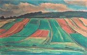
Rabas: Krajina
|
Jaroslav Durych: Bloudění
Tzv. větší valdštejnská trilogie Bloudění se odehrává v době třicetileté války. Na historickém pozadí rámovaném popravou vůdců stavovského povstání na Staroměstském náměstí v roce 1621 a zavražděním vojevůdce Valdštejna v Chebu roku 1634 se uskutečňuje věčný svár sil dobra a zla. Kromě historických postav a vojenských střetů sleduje autor i osudy řadových vojáků Kajetána a Jiřího. Oba usilují o srdce zbožné katolické dívky Andělky, která se zamiluje do Jiřího, ačkoliv patří k protestantům. Durych vnímá dějiny jako kulisy, v nichž se odehrává marný zápas lidí o moc, slávu a bohatství. Jejich „bloudění" je především duchovní. Durychovo pojetí světa i jeho sloh mají blízko k baroknímu vidění.
Tři historické povídky ze stejné doby spojil Durych do tzv. menší valdštejnské trilogie Rekviem.
|
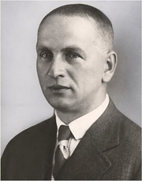
Charakterizuj jazyk ukázky.
Které strany proti sobě bojovaly ve třicetileté válce?
Kteří autoři psali o třicetileté válce?
Co víš o Valdštejnovi?
|
Jan Čep (1902-1974)
Čep se narodil v Myšlichovicích u Litovle, zemřel v Paříži. Vystudoval češtinu, angličtinu a francouzštinu na Filozofické fakultě Univerzity Karlovy. Pracoval v nakladatelství Melantrich. Měl blízko k ruralistům i katolickým spisovatelům. Ve svých knihách řeší existenciální a transcendentální otázky. Roku 1948 emigroval do Francie. V zahraničí spolupracoval s Rádiem Svobodná Evropa.
Napsal sbírky povídek Dvojí domov, Zeměžluč, Letnice, Tvář pod pavučinou nebo Polní tráva, román Hranice stínu či knihy esejů Rozptýlené paprsky a Sestra úzkost.
|
Jan Čep: Dvojí domov
Hlavním tématem Čepova díla je vztah lidí k tradici. Autor přichází s vizí dvojího domova, tedy nejen pozemské vlasti, ale rovněž jakéhosi transcendentálního domova mrtvých předků. Každodenní život člověka chápe jako pouhý zlomek obecného bytí. Vždy je přítomen ještě metafyzický „druhý domov". Ten se ale smrtelníkům zjevuje jen výjimečně. Krátké povídky začínají realistickým líčením života na venkově, vrcholí ale mysteriózním prožitkem „druhého domova", který náhle proniká k postavám, aby mohly plně procítit jeho existenci.
|
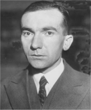
Srovnej realistickou část Čepovy povídky s metafyzickou.
Souhlasíš s Čepovým viděním světa?
Které ze svých nejstarších předků znáš? Co o nich víš?
Lze žít bez víry v Boha?
Co dobrého přinášejí společnosti katolíci? Co jiní věřící? A co ateisté?
|
Josef Knap (1900-1973)
Knap se narodil v Podůlší u Jičína a zemřel v Praze. Pracoval v divadelním oddělení Národního muzea a jako nakladatelský i časopisecký redaktor. Orientoval se na ruskou a severskou literaturu. Vyznával vlastenectví, venkov, domov a tradiční hodnoty typické pro ruralismus. Redigoval časopis Sever a východ. Uspořádal sborník Básníci selství a napsal programovou stať Literatura české půdy. Je autorem románů Réva na zdi, Muži a hory, Cizinec, Pusta, Věno nebo Vzdálená země a sbírky povídek Čas kopřiv. Roku 1951 byl odsouzen v politickém procesu, po čtyřech letech ho z vězení propustili a později byl rehabilitován.
|
Josef Knap: Věno
Román Věno líčí složité vztahy na venkově. Autor se soustřeďuje na osudy dvou statkářských rodů – bohaté Štěpaře a chudé Rudiše, kterým navíc jejich grunt vyhoří. Bratři Rudišové se pokoušejí statek obnovit. Ondřej kvůli tomu musí opustit studia. Antonína přitahuje bohatství Štěpařů, ale Růžena Štěpařová se s ním rozejde, a tak si vyhlédne její sestru Pavlu. Ta po porodu umírá. Starý Štěpař chce, aby se jeho nejmladší dcera Julka vdala za Antonína, protože osiřelé vnouče by měla vychovávat matka od Štěpařů. Julka nakonec přání otce vyhoví a poddá se svému osudu.
|
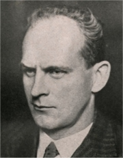
Zjisti význam slov, kterým nerozumíš.
Uměl/a bys upéct chleba?
Jak se žije na venkově dnes?
Srovnej život ve městě a na vesnici.
|
František Křelina (1903-1976)
Křelina pracoval jako učitel. Spolupracoval s ruralisty a jejich časopisem Sever a východ. Roku 1951 byl v politickém procesu odsouzen ke 12 letům vězení, odseděl si 9 let. Je autorem románů z venkovského prostředí Hlas na poušti, Hubená léta a Puklý chrám, historických románů Dcera královská, blahoslavená Anežka Česká a Amarú, syn hadí nebo protifašistických próz Bábel, Soud nad Bábelem a Každý své břímě.
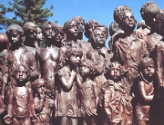
Pomník dětským obětem války v Lidicích od Marie Uchytilové a Jiřího Václava Hampla
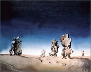
Václav Tikal: Lidice
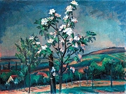
Rabas: Kvetoucí štěp
|
František Křelina: Každý své břímě
Novela Každý své břímě zachycuje tragické události kolem vyhlazení Lidic. Hlavní postavou je starý lidický farář Josef Štemberka, který by si mohl zachránit život, ale rozhodne se sdílet osud s ostatními. Po atentátu na Heydricha si okupanti zvolili Lidice jako exemplární příklad odvety. Nacistům se nepodařilo získat jediný důkaz, že obyvatelé Lidic měli nějaké kontakty s atentátníky. Přesto byli všichni muži starší patnácti let bez soudu zastřeleni, ženy a děti odvlečeny a obec srovnána se zemí.
Novela Každý své břímě vyšla roku 1969. Autor měl o lidických událostech velmi málo informací. Kniha tedy není dokumentem ani historickým dílem. Jde o uměleckou licenci. Křelina svou prózu rozčlenil do sedmi vět a šesti intermezz, které rámuje vstup a epilog.
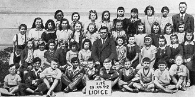
Poslední fotografie lidických dětí
Další autoři a jejich díla
Jan Zahradníček: Jeřáby, Svatý Václav
Bohuslav Reynek: Rty a zuby, Had na sněhu
Josef Palivec: Pečetní prsten, Naslouchání
Zdeněk Kalista: Tváře ve stínu, Vzpomínání na Jana Zahradníčka, Po proudu života, Století andělů a ďáblů
Václav Renč: České žalmy, Popelka Nazaretská, Loretánské světlo
A.C.Nor: Bürkental, Raimund Chalupník, Život nebyl sen
|
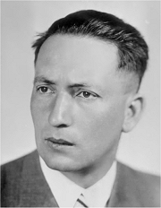
Považuješ lidického faráře za hrdinu? Proč?
Kolik mužů bylo v Lidicích popraveno?
Co se stalo s ženami a dětmi?
Kdy došlo k lidické tragédii?
Které další obce potkal osud Lidic?
Co si myslíš o atentátu na Heydricha?
Co je epilog?
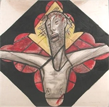
Jan Bauch: Ukřižovaný
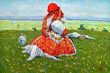
Uprka: Venkovská dívka
|
Internetové stránky
Deml, rozcestník
Fišerová: Dvojí domov v díle Jana Čepa
Durych
Knap
Joža Uprka
Olič: Joža Uprka
Rabasova galerie, Rakovník
Exkurze
Tasov
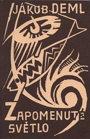
Obálka Demlovy knihy Zapomenuté světlo od Josefa Čapka
|
Doporučená četba
Básníci selství, Studie o ruralismu u nás, Svobodné učení selské, Praha 1932
Durych, Jaroslav: Polemiky a skandály, Periplum, Olomouc 2002
Durych, Václav: Katolická cesta Jaroslava Durycha
Durych, V.: Vzpomínky na mého otce, Votobia, Olomouc 2001
Hora, Petr: Jaroslav Durych, Ostrava 1992
Jaroslav Durych publicista, Academia, Praha 2001
Jaroslav Durych, Život, ohlasy, soupis díla a literatury o něm, Atlantis, Brno 2000
Kalista, Zdeněk: Po proudu života (2 svazky)
Kalista, Z.: Tváře ve stínu, Praha 1969
Knap, Josef: Bez poslední kapitoly, Torst, Praha 1997
Knap, J.: Literatura české půdy, Praha 1939
Med, Jaroslav: Spisovatelé ve stínu, Portál, Praha 2004 (Deml, Durych, Čep, Zahradníček...)
Nor, A.C.: Život nebyl sen (2 svazky), Atlantis, Brno 1994
Olič, Jiří: Čtení o Jakubu Demlovi, Olomouc 1993
Putna, Martin C.: Česká katolická literatura 1848-1918, Torst, Praha 1998
Putna, M. C.: Jaroslav Durych, Torst, Praha 2003
Rotrekl, Zdeněk: Skrytá tvář české literatury, Brno 1993
Sak, Robert: Život na vidrholci (Příběh Bedřicha Fučíka), Paseka, Praha 2005
Stankovič, Andrej: Okradli chudého, Příběh Josefa Floriana a jeho díla, Olomouc 1998
Svoboda, Jiří: Jan Čep, Ostrava 1992
Trávníček, Mojmír: O Františku Křelinovi, Hejkal, Havlíčkův Brod 2003
Trávníček, M.: Pouť a vyhnanství, Život a dílo Jana Čepa, Proglas, Brno 1996
Trávníček, M.: Sdílet věčné, Periplum, Olomouc 2002
Tváří k vesnici, Novina, Praha 1936
|
Vypracuj písemný referát o některé z uvedených knih.
Tipy
Lidice
Lidice, mezinárodní dětská výtvarná výstava
Pravda o vypálení Lidic, článek
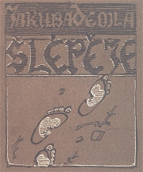
Obálka Demlova časopisu Šlépěje
|
|